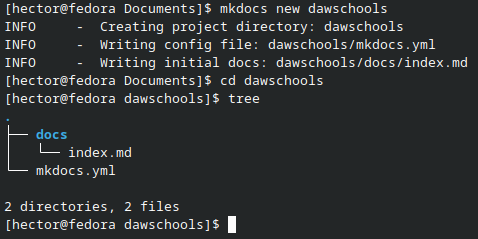
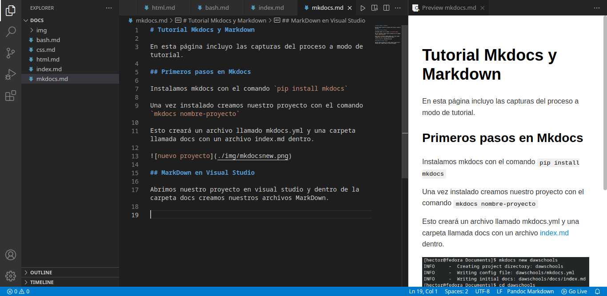
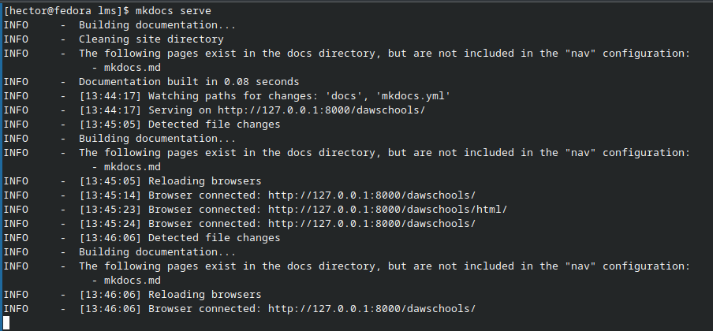
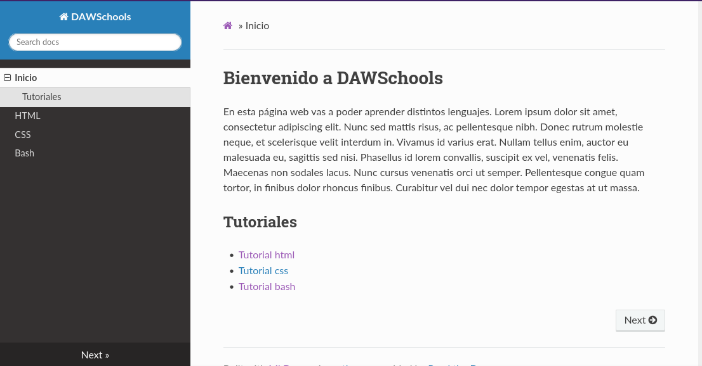
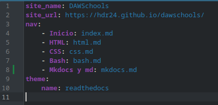
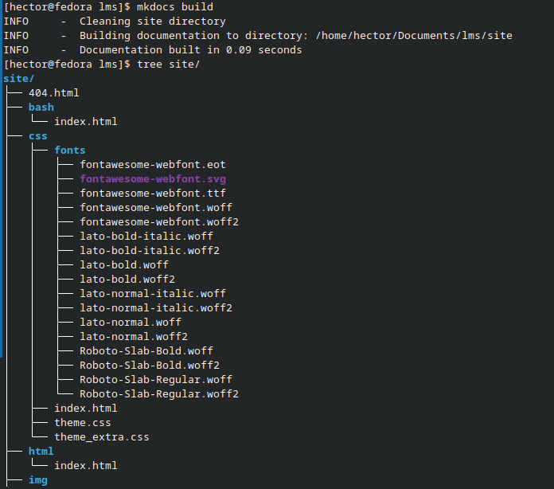
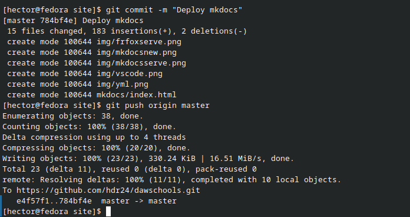
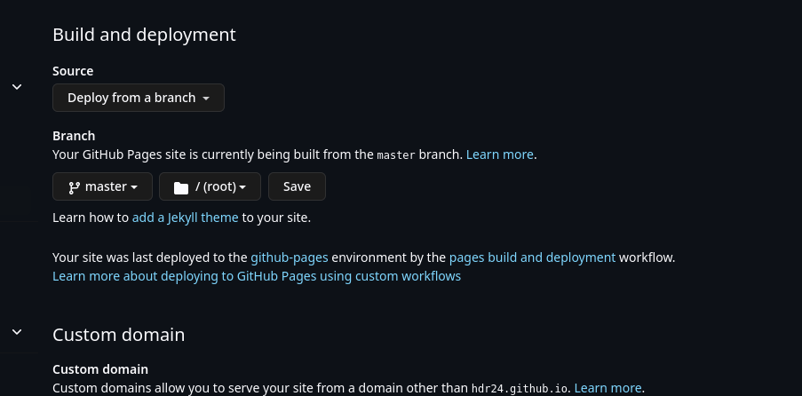
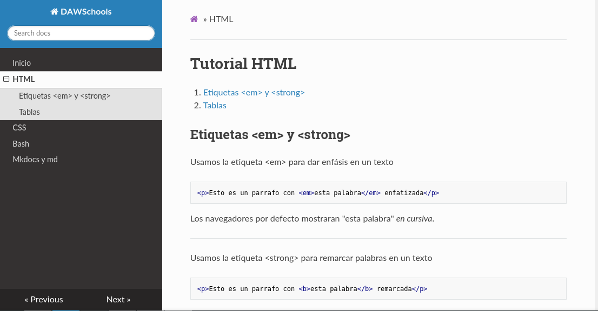

Tutorial Mkdocs y Markdown
En esta página incluyo las capturas del proceso a modo de tutorial.
Primeros pasos en Mkdocs
Instalamos mkdocs con el comando pip install mkdocs
Una vez instalado creamos nuestro proyecto con el comando mkdocs nombre-proyecto
Esto creará un archivo llamado mkdocs.yml y una carpeta llamada docs con un archivo index.md dentro.

MarkDown en Visual Studio
Abrimos nuestro proyecto en visual studio y dentro de la carpeta docs creamos nuestros archivos MarkDown.

Mkdocs serve y mkdocs.yml
Una vez hayamos creado nuestros archivos podemos ver como queda la página con mkdocs serve


Como vemos nos falta la página de mkdocs ya que no la hemos añadido al nav. Para eso editamos el archivo mkdocs.yml. En este archivo podemos definir la configuración de la página como el nombre de, la url, la barra de navegación o el tema.

Deploy con mkdocs
Finalmente vamos a subir nuestra página a github pages. Generamos la página con mkdocs build que creará una carpeta llamada site.
Esta carpeta la debemos subir a nuestro repositorio en github.

Github pages
Subimos la carpeta site a nuestro repositorio como mencionamos anteriormente

En los ajustes de nuestro repositorio vamos a la seccion pages e indicamos cómo queremos crear nuestra página de pages.

Ya podremos acceder a nuestra página.
